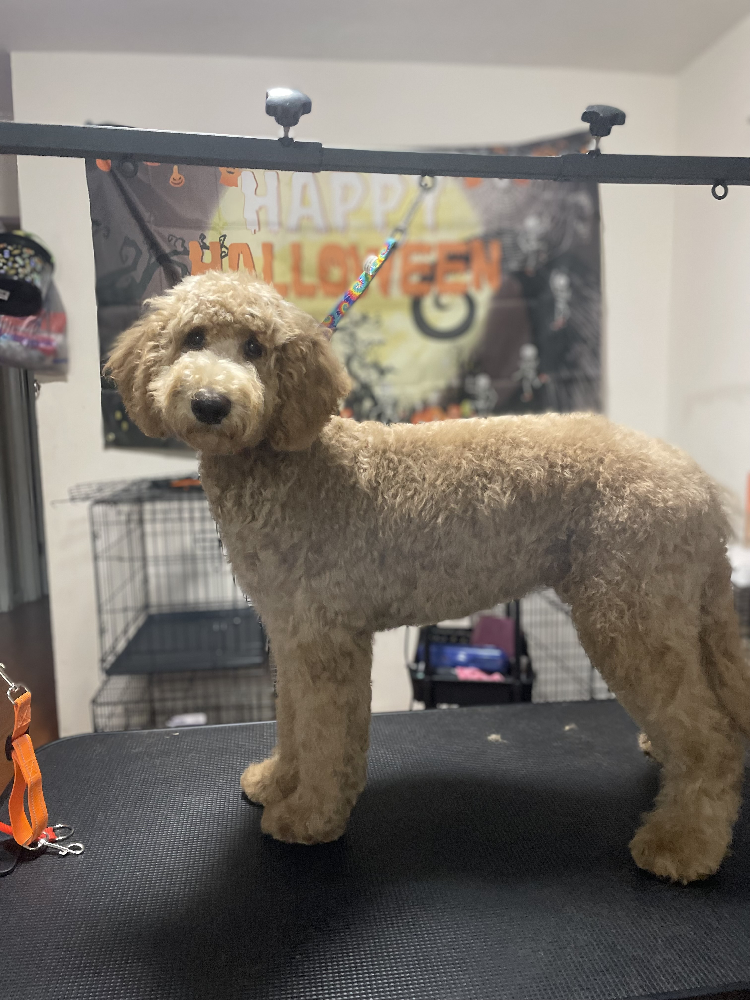

This precious Shih Tzu got a basic haircut/bath with a 3/8 inch body and a teddy bear face!
She also got a pair of match patriotic bows on her fluffy ears.
Hello!
W elcome to F urever F luffy,
where your furry friend's grooming needs are our top priority! Founded in 2024, F urever
F luffy is a premier dog grooming salon dedicated to providing high-quality grooming services
in a safe, loving, and stress-free environment. Our mission is to ensure that every dog leaves our salon looking
and feeling their best. At F urever F luffy, we offer a comprehensive range of
grooming services tailored to meet the unique needs of each dog. We are committed to the health, happiness, and
well-being of your dog. We use only high-quality, pet-safe products and state-of-the-art grooming equipment.
Our goal is to make grooming a positive and enjoyable experience for your pet, ensuring they leave our salon
feeling pampered and F urever F luffy!